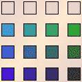
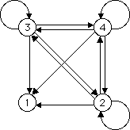
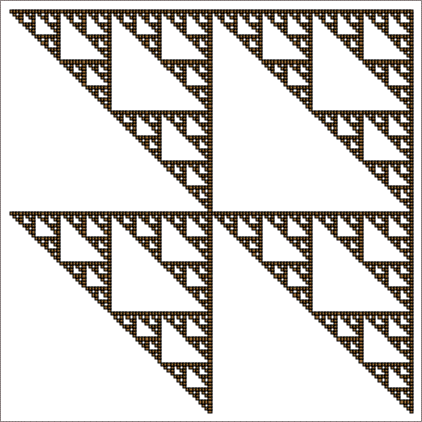
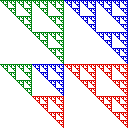

| Setting to 0 all the entries in the first row produces four smaller gaskets, one in each of the
four length 1 address squares. |
| We see the addresses 11, 21, 31, and 41 are empty, so the lower left corner of each length 1
square is empty. |
| Continuing this analysis we see a gasket in each length 1 address square. |
|  |
 |
 |
|
 |
|
|
| Alternately, note these transitions 2 → 1,
3 → 1,
and 4 → 1 are allowed, so we
see why the part in address square 1 (the lower left corner) looks as it does: |
| The small gasket in address 12 is
T1(gasket in address 2). |
| The small gasket in address 13 is
T1(gasket in address 3). |
| The small gasket in address 14 is
T1(gasket in address 4). |
|
 |
|
| Why are the parts in addresses 2, 3, and 4 gaskets? |
| Notice the transitions 1 → 2,
1 → 3,
and 1 → 4 are forbidden, so the squares with addresses
21, 31, and
41 are empty. |
| Consequently, in squares 2, 3, and
4 any subsquare with address containing 1 is empty, while all other
combinations are allowed. |
| We know forbidding
one of the four transformations, and making no other restrictions, generates a gasket. |
| So we obtain a gasket in the squares with addresses 2,
3, and 4. | |
 |
|
| To understand the effect of forbidding the 1 → 1 transition, suppose we
modify the table by allowing 1 → 1 while continuing to forbid 1 → 2,
1 → 3, and 1 → 4. |
| Try to sketch the result before looking at the answer. |
Return to Gaskets.
|